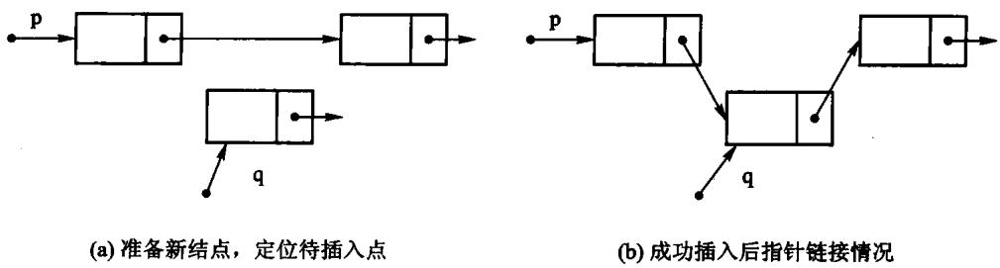
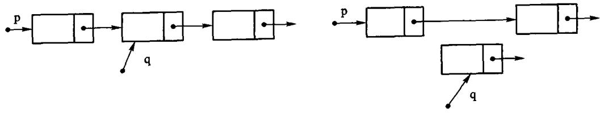
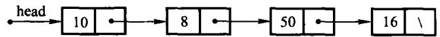
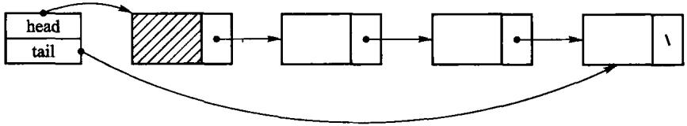
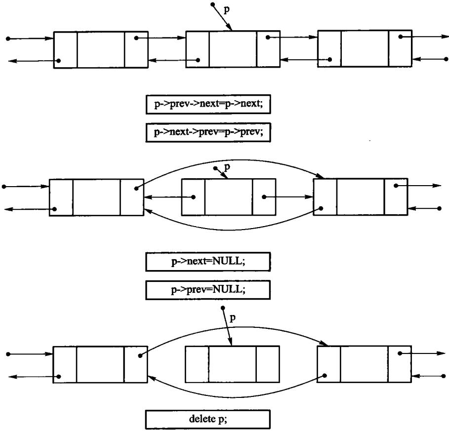

一串同类型元素，排成唯一的先后次序
一条主线：同一个逻辑结构，两种存储结构，代价完全不同。
| 运算 | 含义 | 顺序表 | 链表 |
|---|---|---|---|
at(i) |
按下标取值 | O(1) | O(n) |
find(x) |
按内容查位置 | O(n) | O(n) |
insert(i, x) |
在位置 i 插入 | O(n) 搬元素 | O(n) 找前驱 |
remove(i) |
删除位置 i | O(n) 搬元素 | O(n) 找前驱 |
append(x) |
表尾追加 | 摊还 O(1) | O(1)（有尾指针） |
两个 O(n) 不是同一回事：一个在搬数据，一个在走指针。
原书用一个类模板 List<T> 写这组运算，那份清单有两处硬伤：
bool delete(const int p); <- delete 是 C++ 关键字, 不能作函数名
class List { void clear(); ... } <- 通篇没有 public:第二条尤其值得停一下：class 的默认访问权限是 private， 于是这个抽象数据类型的每一个运算都调不到。
一个所有运算都私有的 ADT，语法上成立，语义上是空的。
元素连续存放，每个占 L 个单元，首地址 b：
只要知道基地址，任一元素的地址都能直接算出来—— 所以按下标取值是 O(1)。这就是「随机存取」。
物理相邻表示了逻辑相邻。
T* data_; 指向底层数组
size_type capacity_; 数组能放多少个
size_type size_; 现在放了几个整份实现在 code/ch02/array_list/teaching.hpp——一个文件、一个类。
后面几页把它拆开逐段看。
// 按下标读取，O(1)——这是顺序表相对链表的看家本领。
// 下标非法是**调用方的错误**，不是可预期状态，所以抛异常而不是返回 optional。
const T& at(size_type index) const {
if (index >= size_) {
throw std::out_of_range("ArrayList::at: 下标越界");
}
return data_[index];
}
T& at(size_type index) {
if (index >= size_) {
throw std::out_of_range("ArrayList::at: 下标越界");
}
return data_[index];
}先查下标合不合法，然后直接 data_[index]，没有循环。
越界抛 std::out_of_range——原书是打印一行再返回 false。
原书的签名是：
bool getPos(int& p, const T value);一次调用带回两件事：找没找到（返回值）、在第几位（出参 p）。
int p;
list.getPos(p, 20); // 忘了看返回值
use(p); // 用的是一个从没被写过的 p程序不崩，只是默默按错误的下标继续跑。
// 按内容查找，O(n)。找到返回下标，没找到返回空 optional。
// 原书【算法2.3】用 `bool getPos(int& p, const T value)`：忘了看返回值，
// 就会读到一个从没被写过的 p。这里「找没找到」是返回值类型的一部分。
std::optional<size_type> find(const T& value) const {
for (size_type i = 0; i < size_; ++i) {
if (data_[i] == value) {
return i;
}
}
return std::nullopt;
}std::optional<size_type> 是一个「可能装着下标的盒子」： 找到了盒子里是下标，没找到盒子是空的。
取值必须先开盒，而开盒这一步绕不过去。

// 在位置 pos 插入，pos 可以等于 size()（追加到表尾）。
// 代价 O(n)：pos 之后的元素都要右移一位。这正是顺序表与链表要对比的地方。
void insert(size_type pos, const T& value) {
if (pos > size_) {
throw std::out_of_range("ArrayList::insert: 插入位置非法");
}
if (size_ == capacity_) {
grow();
}
for (size_type i = size_; i > pos; --i) {
data_[i] = data_[i - 1]; // 从后往前搬，否则会自己覆盖自己
}
data_[pos] = value;
++size_;
}// 扩容：申请两倍大的新数组，搬过去，再释放旧的。
// 翻倍而不是加一，才能让 append 的摊还代价保持 O(1)。
void grow() {
size_type next = (capacity_ == 0) ? 1 : capacity_ * 2;
T* fresh = new T[next];
for (size_type i = 0; i < size_; ++i) {
fresh[i] = data_[i];
}
delete[] data_; // 先搬完再释放旧的，顺序反了就会读到已释放的内存
data_ = fresh;
capacity_ = next;
}delete[] 必须在搬完之后——顺序反了就是读已释放的内存。

// 删除 pos 上的元素并返回它。代价同样是 O(n)：后面的元素都要左移一位。
T remove(size_type pos) {
if (pos >= size_) {
throw std::out_of_range("ArrayList::remove: 下标越界");
}
T removed = data_[pos];
for (size_type i = pos; i + 1 < size_; ++i) {
data_[i] = data_[i + 1];
}
--size_;
return removed;
}原书 arrList 有析构函数，却没有拷贝构造与拷贝赋值。
一句 arrList<int> b = a; 之后，两个对象持有同一根指针， 各析构一次 → 同一块内存被释放两次。
explicit ArrayList(size_type initial_capacity = 8)
: data_(new T[initial_capacity]), capacity_(initial_capacity), size_(0) {}
// 三法则：自己管着 new 出来的数组，就得自己写拷贝构造和拷贝赋值。
// 不写的话编译器会照抄指针，两个表指向同一块内存，各析构一次 → 二次释放。
ArrayList(const ArrayList& other)
: data_(new T[other.capacity_]), capacity_(other.capacity_), size_(other.size_) {
for (size_type i = 0; i < size_; ++i) {
data_[i] = other.data_[i];
}
}原书的 arrList 里还有第四个成员 int position，配 setPos / next / prev 用来「依次处理元素」。
遍历状态一旦住进容器，三件事同时坏掉：
const 对象没法遍历（游标要改）本书删掉它，改为提供 begin() / end()——range-for 因此可以直接用。


头结点是一个不存放数据的哨兵，永远排在第一个真元素前面。
有了它，「在表头插入」和「在中间插入」变成同一句话： 找到前驱，改它的 next。空表也不必另写一套分支。
// 在表尾追加。**因为存了 tail_，这里是 O(1)**；没有它就得每次从头走到尾。
void append(const T& value) {
Node* fresh = new Node;
fresh->value = value;
fresh->next = nullptr;
tail_->next = fresh;
tail_ = fresh;
++size_;
}没有它，每次追加都得从头走到尾。
append 单列一个函数而不是转调 insert(size_)，正是因为有它—— 转调就白白退化成 O(n) 了。
// 返回位置 pos 的前驱结点。pos == 0 时前驱就是头结点——
// 这正是头结点存在的意义：表头不再是特例。
Node* predecessor_at(size_type pos) const {
if (pos > size_) {
throw std::out_of_range("LinkedList: 下标越界");
}
Node* predecessor = head_;
for (size_type i = 0; i < pos; ++i) {
predecessor = predecessor->next;
}
return predecessor;
}为什么返回前驱而不是结点本身？ 因为插入和删除都要改前驱的 next， 而单链表从一个结点走不回它的前一个。
一个函数同时服务两处——这是头结点带来的简化。
// 删除位置 pos 上的元素并返回它。同样是「先定位前驱，再改一条链接」。
T remove(size_type pos) {
if (pos >= size_) {
throw std::out_of_range("LinkedList::remove: 下标越界");
}
Node* predecessor = predecessor_at(pos);
Node* dying = predecessor->next;
T value = dying->value;
predecessor->next = dying->next;
if (dying == tail_) { // 删的是最后一个，尾指针退回前驱
tail_ = predecessor;
}
delete dying;
--size_;
return value;
}delete，只摘链不释放就是内存泄漏tail_ 必须回退——不回退，下一次 append 就写进已释放的内存多出来的 prev（64 位机上 8 字节）只买到一件事，但很值：
已知一个结点时，删除它是 O(1)。
单链表要做同一件事，得先从头走到它的前驱——O(n)， 因为单链表从一个结点走不回前一个。

// 摘掉一个已知的结点，O(1)。**这是双链表的看家本领**：
// 单链表要做同一件事，得先从头走到它的前驱，O(n)。
T erase_node(Node* node) {
T value = node->value;
if (node->prev != nullptr) {
node->prev->next = node->next;
} else {
head_ = node->next; // 删的是表头
}
if (node->next != nullptr) {
node->next->prev = node->prev;
} else {
tail_ = node->prev; // 删的是表尾
}
delete node;
--size_;
return value;
}「为什么不全用 unique_ptr？」——判据是结构形态，不是偏好。
| 形态 | 用什么 | 理由 |
|---|---|---|
| 链 | 裸指针 + 迭代释放 | unique_ptr 的析构是递归的，深度正比于链长 |
| 树 | unique_ptr |
也递归，但深度 O(log n) |
| 一整块缓冲区 | 裸 T* + 三法则 |
换 unique_ptr<T[]> 只省一句 delete[] |
| 共享 | 手写引用计数 | unique_ptr 语义上不成立 |
本机 8 MB 栈，RecursiveChain（unique_ptr<Node> next）：
| 构建档 | 最大安全结点数 | 崩溃于 |
|---|---|---|
-O0 -g |
≈ 57,625 | 58,601 |
-O2 |
≈ 523,329 | 524,306 |
同规模下迭代释放的版本在 -O0 跑到 500 万结点无恙。
两档差九倍是最关键的一点：debug 崩、release 过。
循环链表把尾结点的 next 接回首结点：
空表: tail = nullptr
非空: first = tail->next
停止: 再次遇到起点，而不是遇到 nullptrtail，取首结点和尾插都是 O(1)tail->next 跳过旧首结点tail 清空适合轮转调度等“最后一个之后回到第一个”的场景。
| 顺序表 | 链表 | |
|---|---|---|
| 按下标访问 | O(1) | O(n) |
| 已知前驱后插删 | O(n) 搬元素 | O(1) 改指针 |
| 每元素额外空间 | 无 | 一根指针 |
| 空间是否预分配 | 是（可能浪费/不够） | 否（用多少要多少） |
| 缓存局部性 | 好 | 差 |
选哪个看运算：随机访问多 → 顺序表；频繁在已知位置插删 → 链表。
begin()/end() 而不是内部游标）python3 tools/check_code.py code/ch02/array_list
python3 tools/check_code.py code/ch02/linked_list故意改坏一处，看哪条断言变红：
insert 的搬移循环改成正着走grow 的 delete[] 挪到拷贝循环之前remove 里回退 tail_ 的那两行写不出「会红」的用例，说明还没想清楚那条性质是什么。
放映快捷键
→ / 空格下一页 ←上一页 Home / End首尾
N演讲者备注 O缩略图总览 F全屏 D深色
?这张帮助 Esc关闭
导出 PDF：浏览器打印（Ctrl/Cmd+P），每页一张幻灯片。